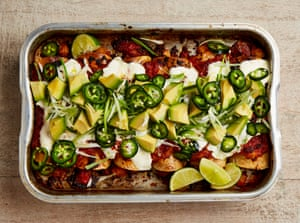

Spicy lamb and potato enchiladas

These enchiladas are a Tex-Mex favourite, and with good reason. The chilli paste is a fantastic condiment in its own right – you could just make that alone, if you like, and keep it in a jar in the fridge, ready to add to sandwiches, sauces and stews.
For the chilli paste
Heat the oven to 240C (220C fan)/475F/gas 9.
Put all the chilli sauce ingredients in a spice grinder or the small bowl of a food processor with two and three-quarter teaspoons of salt and blitz to a smooth paste, scraping down the sides a couple of times as you go. Transfer half the paste to a 30cm x 20cm oven tray, add the tomatoes to the rest and blitz again to a smooth salsa, to make the salsa roja.
Add the potatoes and lamb mince to the chilli paste tray and toss with your (gloved) hands until everything is well coated, breaking apart the mince into small chunks as you go. Transfer to the oven and bake for 35 minutes, stirring once halfway through and breaking the mince apart again, this time with a fork. Scrape the lamb and potato mix into a medium bowl and keep the tray unwashed, because you’ll be using it again later.
Turn down the oven to 210C (190C fan)/410F/gas 6½. Pile up the tortillas on a piece of foil, wrap them up and put in the oven for six minutes, just to warm through and to make them easier to roll.
To build the enchiladas, put a sixth of the lamb mix in the middle of each warm tortilla, then roll up tightly and place seam side down on the reserved tray. Brush the tortillas with a little oil, then spoon the salsa roja on top and bake for 25 minutes.
Spoon the soured cream over the enchiladas, drizzle with some more oil, then top with the spring onions, avocado and jalapeños, and serve with the lime wedges to squeeze on top.